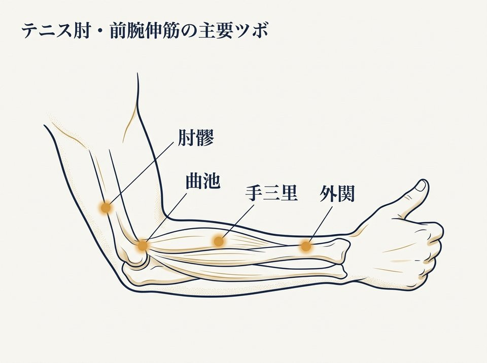

突き指の鍼灸
指先への衝撃による腱・靭帯・骨の損傷。骨折や脱臼の確認を優先し、回復期の循環と可動域回復を支援します。


院長YouTube解説・関連動画
突き指の原因は瞬間的に指先に縦方向の強い力が加わること
突き指の原因は、瞬間的に指先に縦方向の強い力が加わることです。スポーツや転倒などによって、ボールが指にぶつかったり地面に手をついたりした時に起こることが多いです。
指には縦方向の力を和らげる構造はありません。そのため、指の第一関節を伸ばすための伸筋腱がダメージを受け、損傷するのです。
1. 直接的な衝撃による突き指
バスケットボール、バレーボール、野球などでボールが指先に当たり、指が強制的に押し込まれる、転倒した際に指を強く地面に突いてしまう、サッカーや格闘技で相手の体に指が当たる、ドアに指を挟むなどが原因で起こります。
2. 過度な伸展・屈曲による突き指
指が強制的に後ろに反らされる、バスケットボールやバレーボールでスパイクを受ける際に指が大きく反る、指が無理な方向に曲げられる、相手との接触や衝撃で指が不自然な方向に曲がる、衣服やネットに指が引っかかり、急に伸ばされるなど原因で起こります。
バスケットボール→ボールのキャッチミス、相手との接触
バレーボール→スパイクのブロック時、サーブレシーブ
野球→捕球時に指にボールが直撃
サッカー→キーパーのセービング、相手との接触
柔道・格闘技→指をつかまれる、投げ技の際の衝撃
突き指の症状は、指に加わった力の強さや方向によって違う
突き指の症状は、指に加わった力の強さや方向によって違います。そのため、個人差が非常に大きいです。
突き指の程度が軽い場合は、伸筋腱の損傷は少しです。症状として痛みや腫れが現れますが、放っておいても自然に回復する程度です。
突き指の程度が重い場合は、伸筋腱の損傷も大きいです。多くの場合、伸筋腱が切れたり末節骨に剥離骨折が起きたりしています。第一関節が常に曲がった状態になり、放っておくと第二関節が過剰に伸び指が変形する可能性があります。
第一関節に亜脱臼が起きたり、中節骨にまで力が加わり骨折や脱臼が起きたりすることもあります。このような場合は、指を動かすことが難しくなり、激しい痛みや腫れが起こります。
・軽度（打撲・軽い捻挫）
軽い腫れや痛みのみで、動かせますが違和感があります。
・中度（靭帯損傷・腱損傷）
関節周辺の腫れや痛みで、指を動かすと痛みが強まります。関節の安定性が低下し、ぐらつきます。
・重度（脱臼・骨折・腱断裂）
指の変形や関節のズレが明らかになり激しい痛みと腫れが現れます。指を動かせなくなったり異常な動きをしたりします。
突き指の改善方法は突き指の程度によって違います。程度が軽い場合は、突き指をした部分を冷やします。痛みが強い場合は消炎鎮痛薬や湿布を使って改善を行います。
伸筋腱が切れている可能性がある場合は、一定の間第一関節を伸ばすために固定をすることが必要です。
骨折や亜脱臼をしている場合は、指に針金を入れ骨折している部分を固定したり、亜脱臼を改善し指を伸ばすための手術を行ったりすることが必要です。
突き指は、軽い場合は冷やして市販薬での改善が可能ですが、重い場合は手術が必要になるのです。
・怪我直後の応急処置
安静にして無理に指を動かさず、氷や冷水で15～20分冷やし、テーピングや包帯で軽く固定し、腫れを最小限に抑えましょう。指を心臓より高く上げると、腫れや内出血を防げます。無理に指を引っ張ったり温めたりしないようにしましょう。
・急性期（1週間以内）
痛みが強い場合は、整形外科にいきで骨折の有無を確認します。テーピングや固定具を使い、関節の安定を保ちましょう。湿布や鎮痛剤を使います。
・回復期（1～4週間)
炎症が落ち着いたら、指の動きを回復させるリハビリを行います。ゆっくり手を開閉するグーパー運動を行ったり反対の手で指を優しく伸ばす指の屈伸運動、ゴムボール握りや指にゴムバンドをかけゆっくり開閉するゴムバンドエクササイズなどを行いましょう。
突き指は時間が経つとともに段々と痛みが引いていきます。しかし、骨折している場合は、段々と痛みが強くなります。
怪我をした直後の5～15分以内に、指の形が変わるくらいまでの強い腫れが起こった場合は骨折をしている可能性が高いです。
骨折している可能性がある場合、そのままにしておくと後遺症が残る可能性もあるため、痛みの強さに関係なくなるべく早く病院に行くことが大切です。
一般的に突き指は、約1週間で痛みや腫れはおさまります。もし1週間以上経っても痛みや腫れなどの症状が続いている場合は病院に行くことをお勧めいたします。
▼ 詳しく知りたい項目だけタップして開けます（全項目の医学解説を収録）
01. 原因とメカニズム
なぜ症状が起きるのか・鍼灸の作用機序を読む
▼
01. 原因とメカニズム
なぜ症状が起きるのか・鍼灸の作用機序を読む
ボールの直撃や転倒などで指先に縦方向の強い力や過度な伸展・屈曲が瞬間的に加わり、伸筋腱・靭帯・骨を損傷する外傷です。バスケットボール・バレーボール・野球などで多く、軽度の打撲・捻挫から、中度の靭帯・腱損傷、重度の脱臼・剥離骨折・腱断裂まで重症度は幅広く異なります。
なぜ鍼灸で改善へ向かうのか？（作用機序の図解）
突き指に対する鍼灸は、トリガーポイント解放と疼痛抑制系の作用機序を通じて、お体本来の回復力を引き出します。
手技では届きにくい深層筋の硬結（トリガーポイント）へ繊細な鍼で直接刺激を届けます。
CGRPや一酸化窒素の放出により微小血管が拡張し、滞っていた発痛物質の洗い流しを促します。
脊髄後角で痛み信号を遮断し、脳幹からの内因性鎮痛物質（エンドルフィン等）の働きを高めます。
防御性の筋スパズムが解け、関節可動域と本来の動きやすさが段階的に回復します。
02. よくあるお悩み
このような症状はありませんか？（4項目）
▼
02. よくあるお悩み
このような症状はありませんか？（4項目）
- ✓ボールが当たる・転倒するなどして指が強く腫れて痛む
- ✓指の関節がぐらつく、または第一関節が曲がったまま伸ばしにくい
- ✓受傷から5〜15分以内に強い腫れや変形が出た
- ✓1週間以上経っても指の痛みや動かしにくさが引かない
03. 当院の施術アプローチ
施術の進め方・改善のポイントを見る
▼
03. 当院の施術アプローチ
施術の進め方・改善のポイントを見る
04. ツボ詳細・セルフケア一覧
肘・前腕・手首・指のツボ図解とセルフケア（6穴）
▼
04. ツボ詳細・セルフケア一覧
肘・前腕・手首・指のツボ図解とセルフケア（6穴）
実際の施術ではお一人おひとりの体質・症状に合わせて選穴しますが、肘・前腕・手首・指（腱鞘炎・テニス肘・手根管等）の筋骨格系トラブルの臨床でよく用いられる代表的なツボの目安です。
| ツボ名 | 位置の目安 | 主な狙い | セルフケアの注意点 |
|---|---|---|---|
| 曲池（きょくち） | 肘を曲げたときにできる外側のシワの先端 | 外側上顆炎（テニス肘）・前腕伸筋群の過緊張緩和 | 強い腫れや熱感がある急性期は直接強く揉まないようにします。 |
| 手三里（てさんり） | 曲池から手首方向へ指3本分下がった筋肉の盛り上がり | 前腕の張り・腱鞘炎やバネ指につながる筋疲労の緩和 | 痛気持ちいい強さで3〜5秒ずつゆっくり圧迫します。 |
| 外関（がいかん） | 手の甲側、手首のシワから指3本分肘寄りの2本の骨の間 | 手首の背屈痛・前腕のねじり動作痛・自律神経の調整 | 手首を軽く緩めた状態で優しく押します。 |
| 合谷（ごうこく） | 手の甲側、親指と人差し指の骨が交わる手前のくぼみ | 手指の痛み・疼痛抑制系（下行性抑制）の活性化 | 妊娠中の方は強い刺激を控えてください。 |
| 内関（ないかん） | 手のひら側、手首のシワから指3本分肘寄りの2本の腱の間 | 手根管周囲の緊張緩和・前腕屈筋群と自律神経の調整 | しびれが強く響く場合は圧を弱めて軽くさすります。 |
| 大陵（だいりょう） | 手のひら側、手首の横ジワのほぼ中央 | 手首の痛み・手根管症候群や腱鞘の過負担ケア | 神経が浅い場所のため、ゴリゴリ揉まず優しく触れる・温める程度にします。 |
05. 医学的根拠・国際査読論文（PubMed / Cochrane）
科学的エビデンス・出典リンク一覧（3件）
▼
05. 医学的根拠・国際査読論文（PubMed / Cochrane）
科学的エビデンス・出典リンク一覧（3件）
国際的な医学データベース（PubMed・Cochrane等）で報告されている肘痛・手首・腱鞘炎・手根管領域の代表的な査読済み鍼灸研究をまとめています（標準治療との併用や研究上の限界を含めて正確に掲載）。
| 年・研究デザイン | 対象・規模 | 主な結果 | 限界・出典 |
|---|---|---|---|
| 2020年 メタ解析 | 外側上顆炎（テニス肘）10 RCTs（n=796） | 薬物・ブロック療法等と比較し臨床有効率で優位な傾向を報告。 | 組み入れ試験の質が低く大規模RCTが必要。 PubMed (PMID: 32318130) |
| 2024年 系統的レビュー | 外側上顆腱障害 47 RCTs | シャム鍼比で短期的な機能障害スコア軽減（MD -9.1）を報告。 | エビデンス確実性は低くさらなる検証が必要。 PubMed (PMID: 38402668) |
| 2018年 Cochraneレビュー | 手根管症候群 12試験（n=869） | 軽〜中等度の症状緩和の補助選択肢として評価。 | シャム鍼比では明確な差が乏しく確実性は低い。 Cochrane (PMID: 30521680) |
参考文献・出典
- 2020年 メタ解析（外側上顆炎（テニス肘）10 RCTs（n=796））— PubMed (PMID: 32318130)
- 2024年 系統的レビュー（外側上顆腱障害 47 RCTs）— PubMed (PMID: 38402668)
- 2018年 Cochraneレビュー（手根管症候群 12試験（n=869））— Cochrane (PMID: 30521680)
06. よくある質問（FAQ）
よくあるご質問を見る（2件）
▼
06. よくある質問（FAQ）
よくあるご質問を見る（2件）
Q. 突き指したら指を引っ張って治した方がいいですか？
いいえ、無理に引っ張ると損傷した腱や靭帯をさらに傷める恐れがあるため厳禁です。まずは安静にして15〜20分ほど冷やし、早めに整形外科を受診してください。
Q. どのくらいで病院に行くべきですか？
5〜15分以内の強い腫れや変形、時間経過で増す痛み、1週間以上続く症状がある場合は骨折や腱断裂の疑いがあるため、必ず整形外科を受診してください。
あわせて読まれる関連疾患（筋肉、骨のお悩み）
お尻から足後ろ側へ広がる痛みやしびれ。原因を見極め、腰・臀部・股関節の深層筋へ的確にアプローチします。
40〜60代に多い肩の激痛・可動域制限（五十肩）を、炎症期と拘縮期の見極めと鍼灸・全身バランス調整で改善する解説。
HTLV-1ウイルス感染者の一部に発症し、脊髄の炎症により両下肢のつっぱり・歩行障害や排尿障害が徐々に進む疾患です。
成長期の中高生がスポーツ中の急激な筋収縮により、骨盤の骨端線付着部で骨の一部が剥がれて起こる骨折です。
免疫系が自身の筋組織を攻撃して炎症と変性を起こし、対称性の筋力低下や筋痛をきたす全身性のリウマチ性疾患群です。
骨端軟骨とその周囲の軟部組織にX線上の点状石灰化像がみられ、低身長や関節・脊柱の異常を伴う遺伝性疾患群の総称です。
CLINICAL RECOVERY CASES
✨ 実際の臨床改善事例・回復経過を見る
銀座本院をはじめ各院での実際の改善事例を症状別に絞り込んでご確認いただけます。
おひとりで悩まず、まずはご相談ください
銀座本院・川口・大宮・横浜・博多・田無の各院でご予約を承っております。